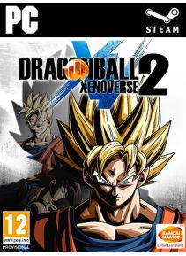

Dragon Ball Xenoverse 2 este un joc de rol de joc de rol dezvoltat de Dimps şi publicat de Bandai Namco Entertainment bazat pe franciza Dragon Ball . Este continuarea jocului Dragon Ball Xenoverse, lansat pe 5 februarie 2015 pentru PlayStation 4 , Xbox One şi 28 octombrie pentru Microsoft Windows . În Japonia , Dragon Ball Xenoverse 2 a fost lansat doar pe PlayStation 4. Jocul va fi lansat pentru Nintendo Switch în 2017, devenind primul joc Dragon Ball pe consola. Este cel de-al doilea joc video Dragon Ball lansat pe consolele de jocuri video din a opta generaţie .
Preţ : 35,67 €